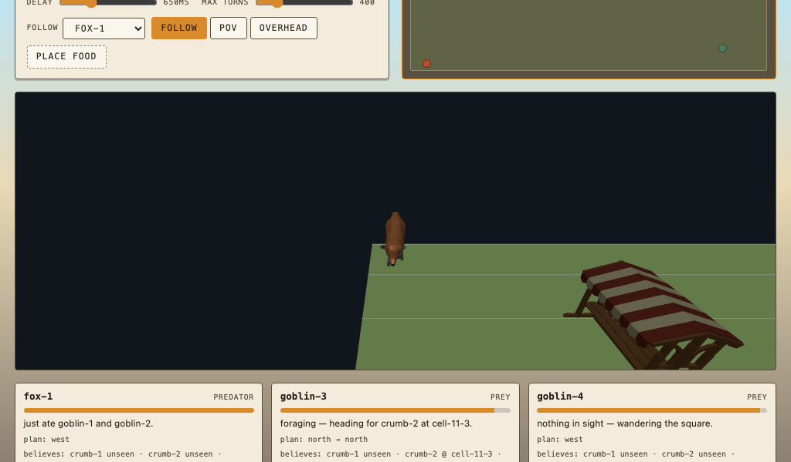

demonstration 11 of 11 · mudiii.html
MMORPG
A fox and a handful of goblins each plan their own next move across a shared town square, rendered in three dimensions. Every one of them acts only on what it has personally seen.
What it demonstrates
This is the same engine as the flat game pages, drawn in three dimensions, and it is the one to open when you want the demonstration to look like a game rather than a diagram.
A goblin can walk straight into a fox it has not spotted. That is not a bug and it is not scripted. The goblin's plan was computed against what the goblin believed, and the fox was not in it.
Click the square to drop food and watch the goblins' plans change on the next tick. Address one by name in chat and tell it something, true or false, and watch it act on that instead.
Three cameras: follow one character, see through its eyes, or look down on the whole board. A top-down map panel shows what is actually there, so you can compare it against what any one character believes.
Three boards ship: a twelve by twelve square with one fox and three goblins, a ten by ten market row with stall lanes to corner a goblin in, and a fourteen by fourteen chapel yard with open ground and two foxes.
Chat you can replayChat you can replay
The opening is the world's own. The chat exchanges are assertions from the turn engine's test file.
The opening line.
a fox prowls the town square; goblins pick over the stalls for scraps. Neither is yours to move. Watch, or address one by name in chat.
The first line of corpus/worlds/src/town-square.jsonl.
Tell the fox where the goblin is. It believes you and moves there on the next tick.
tmct> @fox the goblin is east
told the fox-1 the goblin-1 is at cell-3-2
fox-1 is now at cell-3-2
Asserted in test/services/mudiii-turn.test.mjs.
Tell a goblin where food is, by cell.
tmct> @goblin the crumb is at cell-6-7
told the goblin-1 the crumb-9 is at cell-6-7
Asserted in test/services/mudiii-turn.test.mjs.
A tick with the fox in sight of the goblin. The goal line, the plan and the mood all come out of the same decision.
fox-1 at cell-5-5, goblin-1 at cell-8-5 goal: chasing goblin-1, last seen at cell-8-5 plan: east, east, east mood: angry
Asserted in test/services/predator-prey.test.mjs. “Last seen” is literal: it is the believed position, which may be out of date.
What it looks like
The square in three dimensions, with the HUD showing each character's current goal.

What it works out
Belief, not visibility. Each character's view of another is computed by one function, in four rungs. A removed character is believed nowhere. A character inside the vision radius is known exactly. Otherwise the newest thing anyone told this character about it. Otherwise nothing at all.
Vision is Chebyshev distance, default radius four, with no line of sight test. Buildings block movement, not sight. Keeping sight simple is what stops belief and the planner disagreeing.
The decision ladder. Every tick, every character takes the first rung that applies: deliver, carry, escape a trap, avoid a rival it can see, chase or forage toward the nearest believed target, hold position, or wander on a seeded roll. The rung's name is also the goal line you read in the HUD.
The plan. The chase rung calls the same bounded breadth-first search the Hanoi page uses, over the board's own movement graph, toward the believed cell. If no path exists yet it takes one greedy step and tries again next tick. That is the whole reason a goblin walks into a fox: the plan was correct for what it knew.
The board. Cells are named, distance is Chebyshev, and the prop vocabulary decides what blocks movement: blacksmith, bush, cart, fence, house, inn, oak, stall, well.
Where the cast comes from. A town-square world ships the board only. The engine mints the characters onto it at seeded cells at start, so the opening cast is derived from the layout rather than read from the world's rows.
What you can change. Talking to a character writes a real addressed fact. It is read back through the belief function on the next tick, exactly like something the character saw. Which means you can lie to it.
How it is builtHow it is built
src/services/predator-prey.mjs is the tick engine. It is written against roles, so fox is the predator role and goblin is the prey role.
src/domain/agent-belief.mjs holds belief. It imports nothing, so a belief is a pure function of the fact set and the observer.
src/domain/town-square-world.mjs holds the board: cell naming, distance, direction deltas and the prop vocabulary.
src/services/mudiii-viz.mjs builds the page shell and src/services/mudiii-scene.mjs holds the three-dimensional scene: model loading, the camera update, the render loop and click handling. The models are listed in data/mudiii-assets.json.
The three.js vendor bundle is built inside this page's own build step rather than beside the shared assets, because it is the only page that loads it. A build with no town-square world skips the compile entirely.
One ticker drives the whole simulation, through a serial queue, so every character's turn lands in a defined order.
Related workRelated work
Multi-agent planning under partial observability, and the belief model behind it.
- Rao and Georgeff, “BDI Agents: From Theory to Practice”, 1995.Belief, desire, intention. The goal line in the HUD is the intention; the belief is what it was computed against.
- Fikes and Nilsson, “STRIPS”, Artificial Intelligence 2(3–4), 1971.The action model the movement search grounds against.
- Ghallab, Nau and Traverso, Automated Planning and Acting, 2016.Planning and acting as one loop. Here it runs once per character per tick.
- Steel and Ho, Planning and Execution using Partial Decision, 1993; Steel and Alami (eds.), Recent Advances in AI Planning (ECP'97), LNCS.Planning when you do not know everything, kept in
docs/references/planning/STEEL_AND_HO.md. - Molineaux, Klenk and Aha, on goal driven autonomy, 2010; Cox, “Perpetual Self-Aware Cognitive Agents”, AI Magazine 28(1), 2007, pp. 32–45.Dropping a goal that has stopped making sense, which is what the ladder does every tick.
- Reiter, “On Closed World Data Bases”, in Logic and Data Bases, Plenum, 1978.A character that believes nothing about a fox is not asserting there is no fox.
Credits and further reading
Assets and related pages.
public/models/CREDITS.md, the credits for every three-dimensional model on the square.- three.js, bundled first party as
vendor/three.jsand loaded only by this page. - Classical AI planning, for the search every character calls each tick.
- README for the full bibliography.